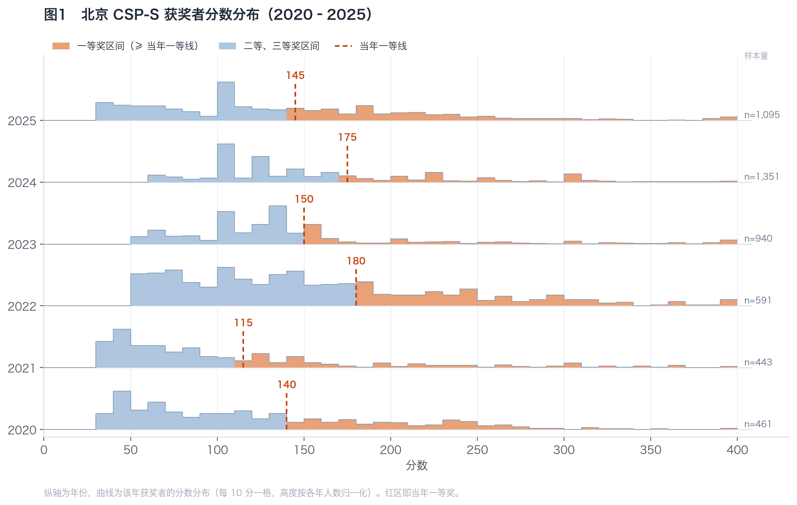
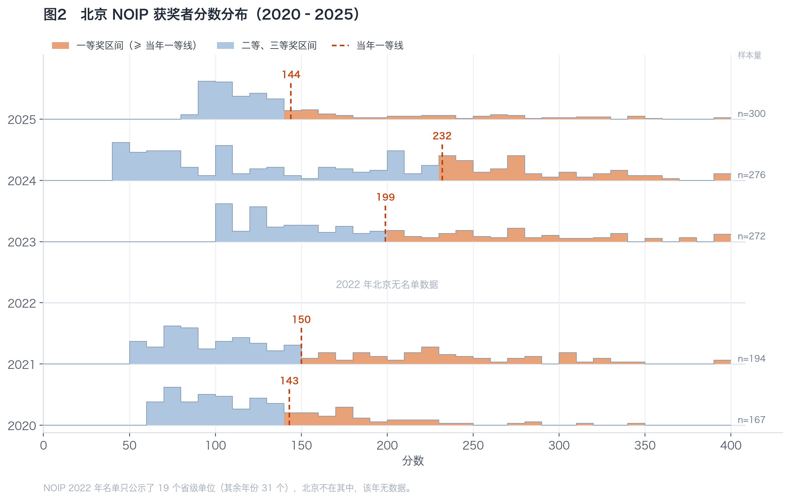
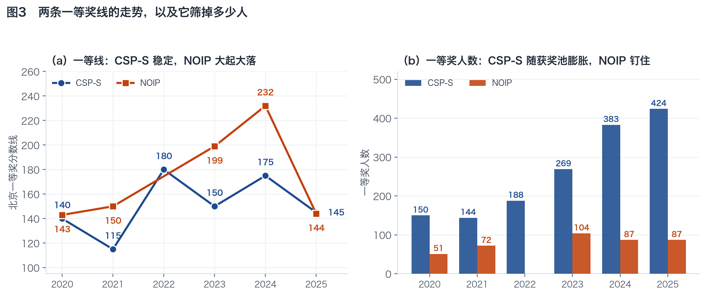
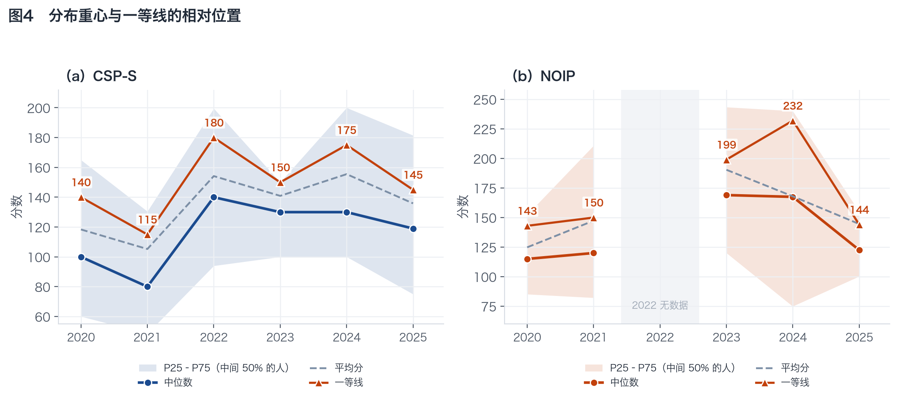

把 2020–2025 年北京获奖者的分数一年一条摊开看：分布整体在往右挪，一等线比分布挪得更凶。CSP-S 一等线在 115–180 之间摆动，NOIP 在 143–232 之间摆动——六年极差 65 分和 89 分。
把“一等线”画成一条竖线，前提是它真的按分数划分。我逐年在数据里核了一遍：每一年、每个赛事，二等奖的最高分都恰好等于一等线减 1——没有任何一个人分数过了线却不是一等奖。所以图上“线右侧就是一等奖”严格成立，红色区域就是当年的一等奖人群。
这里的一等线是北京自己的线（各省名额与分数不同），不是全国基准线。同样一条“NOIP 一等”，在北京和别的省份要求的分数可以差出很多。

| 年份 | 获奖人数 | 平均分 | 中位数 | 一等线 | 一等奖人数 | 一等奖占比 | ≥300 分 |
|---|---|---|---|---|---|---|---|
| 2020 | 461 | 118.4 | 100 | 140 | 150 | 32.5% | 8 |
| 2021 | 443 | 105.3 | 80 | 115 | 144 | 32.5% | 23 |
| 2022 | 591 | 154.2 | 140 | 180 | 188 | 31.8% | 36 |
| 2023 | 940 | 140.9 | 130 | 150 | 269 | 28.6% | 61 |
| 2024 | 1,351 | 155.5 | 130 | 175 | 383 | 28.3% | 121 |
| 2025 | 1,095 | 135.9 | 119 | 145 | 424 | 38.7% | 42 |
这张图上有三个节点值得记住：

| 年份 | 获奖人数 | 平均分 | 中位数 | 一等线 | 一等奖人数 | 一等奖占比 | ≥300 分 |
|---|---|---|---|---|---|---|---|
| 2020 | 167 | 124.8 | 115 | 143 | 51 | 30.5% | 2 |
| 2021 | 194 | 147.3 | 120 | 150 | 72 | 37.1% | 14 |
| 2022 | 无数据 | — | — | — | — | — | — |
| 2023 | 272 | 190.4 | 169 | 199 | 104 | 38.2% | 32 |
| 2024 | 276 | 167.9 | 168 | 232 | 87 | 31.5% | 28 |
| 2025 | 300 | 144.5 | 122 | 144 | 87 | 29.0% | 15 |
NOIP 的故事和 CSP-S 完全不同：

把两条线叠在一张图上，能看出它们并不同步：
右边的柱状图更重要：CSP-S 一等奖人数从 150 涨到 424（2.8 倍），NOIP 从 51 涨到 87（1.7 倍），而且 2024、2025 连续两年都是 87，不再增长。这就是“分母涨、分子不动”的另一面。

这张图回答一个很实际的问题：一个“中等偏上”的北京选手，离一等线有多远？
| 年份 | CSP-S 中位数 | CSP-S 一等线 | 差距 | NOIP 中位数 | NOIP 一等线 | 差距 |
|---|---|---|---|---|---|---|
| 2020 | 100 | 140 | 40 | 115 | 143 | 28 |
| 2021 | 80 | 115 | 35 | 120 | 150 | 30 |
| 2022 | 140 | 180 | 40 | — | — | — |
| 2023 | 130 | 150 | 20 | 169 | 199 | 30 |
| 2024 | 130 | 175 | 45 | 168 | 232 | 64 |
| 2025 | 119 | 145 | 26 | 122 | 144 | 22 |
CSP-S 的差距稳定在 20–45 分，相当于“再稳拿一道题的分数”；NOIP 2024 那年的差距是 64 分，比任何一年都远——这也解释了为什么那一年北京只有 87 个人拿到一等，是六年里最难够线的一次。
NOIP 一等线六年极差 89 分（143–232）。用“去年多少分能拿一等”做目标，在 NOIP 上的误差可能是整整一道题还多。 稳定一点的参照是当届获奖者中的百分位，而不是分数本身。
2024 年 CSP-S 线更高（175）但一等奖更多（383）；2025 年线更低（145）一等奖也更多（424）。 线决定“门槛在哪”，名额决定“能过多少人”，两者不同步的年份最容易误判——2025 年的一等奖占比 38.7% 就是这么来的，跟难度无关。
2024 年有 278 人卡在 100 分，2023 年有 147 人卡在 135 分。分布呈现明显的台阶，这意味着“多拿 5 分”的收益不是线性的： 跨过一个整分台阶，可能超过几百人；台阶内部再挤几分，几乎不动排名。